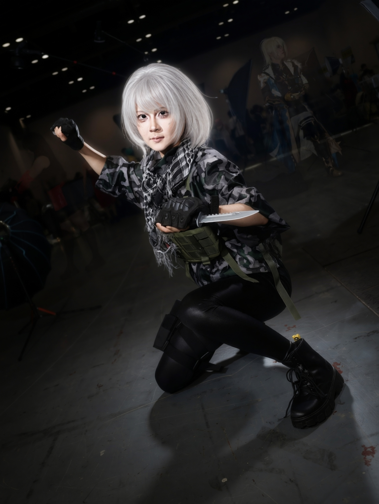

Event media / Social content / Portfolio storytelling
Turning live convention portraits into reusable content.
This case study comes from a broader convention portrait session with 20+ photographed subjects. I selected 9 content-ready images across 7 character groups to show how event coverage can become polished social, web, and archive material.
Social carousel
Event recap
Subject rapport
Visual archive
Event content direction.
The series demonstrates a live-environment content workflow: approach the subject, understand the visual story, direct a comfortable pose, shoot variations, edit consistently, and package the result for web, social, and archive use.
Content outputs
Workshop recaps, student builder spotlights, event albums, Instagram carousels, web case studies, and organized media folders for future reuse.
Content-ready selects




Convention portrait photographs are shared with permission from the photographed subjects. Images are edited by Yibo Wang for color, framing, and portfolio presentation.